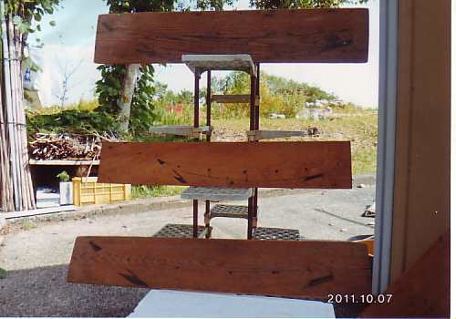
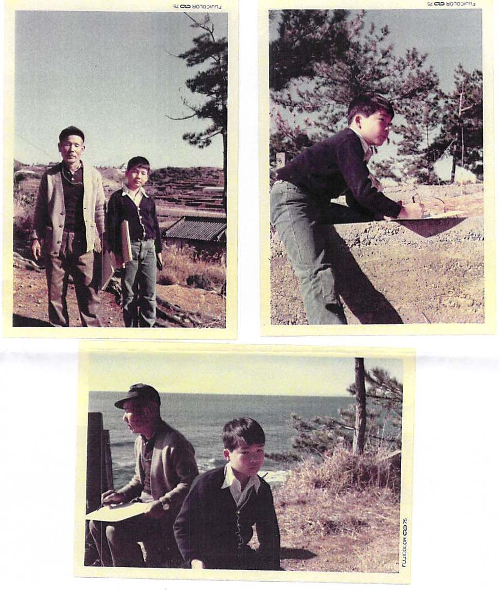

授業関係（2025年度）
広島工業大学情報学部
- ファイナンシャル・マネジメント（前期水3・4限 NX503）
- 経営情報システムデザイン（前期火7・8限：分担 NX507）
- 専門ゼミナールA（前期金1・2限 16-210）
- 卒業研究A（前期月5〜8限 16-210）
- スタディスキル（前期月5・6限：分担 NX508）
- HIT応用実践A（前期１Q月3・4限，木7・8限：分担）
- HIT応用実践B（前期２Q月3・4限，木7・8限：分担）
- マーケティング（後期火7・8限 NX-704）
- 専門ゼミナールB（後期水1・2限）
- 卒業研究B（後期金1〜4限 16-210）
- 情報基礎実践（後期月5〜8限：分担）
- HIT応用実践C（後期３Q火1・2限，金7・8限：分担）
- HIT応用実践D（後期４Q火1・2限，金7・8限：分担）
広島工業大学大学院(情報システム科学）
- オペレーションズ・リサーチ特論（前期火3・4限 N4-418,324）
鹿児島大学法文学部
AHP(Analytic Hierarchy Process)のページについて
「Web DE AHP 」は2005年12月31日をもちまして正式サービスを終了いたしました．長らくのご利用有り難うございました．
現在は新サーバでWeb DE AHP Neo（小畑経史 作）が稼働中です.
プロフィール
- 本籍: 高知県 芸西村
|
|
|

|
|
芸西村の浜辺で産卵するウミガメ：2008.07.11
|
子亀が孵りました（26匹）：2008.08.03
|
昭和40年代まで芸西村長谷寄で和船の船大工をしていた祖父が残した板図
|
昭和27年製作の和船
|
|
|

|
|
母，兄，父：昭和37年目黒別府荘
|
祖父とスケッチ：1970年夜須町住吉海岸
|
野球小僧：1978年土佐中高新グラウンド
|
- 本山町立吉野小学校入学（1970.4~1970.7）〜
土佐清水市立清水小学校（1970.7~1974.3）〜高知市立第四小学校（坂本龍馬の生まれたところ♪）卒（1974.4~1976.3）
- 土佐中学校・高等学校卒（1976.4~1982.1）
- 九州大学理学部数学科卒（1982.4~1986.3），大学院理学研究科修士課程（数学専攻）修了（1986.4~1988.3），大学院理学研究科博士後期課程（数学専攻）退学（1988.4~1990.3）
- 学位：理学修士，九州大学大学院理修第一七四一号，1988.3，博士（数理学），九州大学大学院数理博乙第一〇号, 1996.2
- 免許：高等学校教諭二級普通免許状（数学）昭六〇高二第一八五六号（1986.3），高等学校教諭一級普通免許状（数学）昭六二高一第一六五号（1988.3）
- 富山大学経済学部助手（1990.4~1991.3），講師（1991.4~1993.3），助教授（1993.4~2003.3），教授（2003.4~2022.3），名誉教授（2022.4~）第278号
- 広島工業大学情報学部教授（2022.4~）
- Université de Pau et Pays de l'Adour(France), Lécteur invité（1997.8~1998.8）
- 専門：計画数学(Mathematical Programming)，微分不可能最適化(Nonsmooth Optimization)，AHP(Analytic Hierarchy Process)，ファイナンス(Finance)
非常勤講師
- 鹿児島大学法文学部（2025）
- 富山大学経済学部（2022）
- 富山大学大学院人文社会芸術総合研究科（2022）
- 富山県立大学工学部（2000〜2001）
- 九州大学大学院数理学研究科（2000）
- 金沢大学教養教育（2000）
- 金沢大学経済学部（1999〜2001）
著書
- 白石俊輔著，尾山大輔・安田洋祐監修『経済学で出る数学 ワークブックでじっくり攻める』日本評論社（2014.03出版）
研究